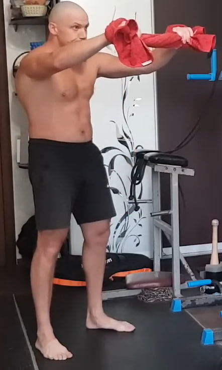

1. Isometría del deltoides anterior — 10×10 s por lado

Colócate de pie con una pierna adelantada para mayor estabilidad y el brazo de trabajo ligeramente flexionado frente al cuerpo. Con la mano contraria sujeta el antebrazo o la muñeca del brazo de trabajo creando un bloqueo firme.
El brazo de trabajo intenta salir hacia adelante y ligeramente hacia arriba, mientras la mano de apoyo no le permite avanzar ni un milímetro. La tensión debe concentrarse en el deltoides anterior (parte frontal del hombro). Mantén la contracción 10 segundos.
Ejecución: 10 repeticiones por cada lado.
2. Rotura en tres puntos con toalla (3-6-3) — 10 ciclos


Usa una toalla o cinta que no se estire. Enrolla en las muñecas dejando aprox. 46 cm entre manos. Trabaja en tres posiciones: (1) delante del cuerpo, (2) sobre la cabeza, (3) detrás de la espalda. En cada punto: 3 s para entrar en tensión, 6 s de máxima fuerza (como si quisieras romperla), 3 s para soltar.
Ejecución: 10 ciclos (en cada uno pasas por los 3 puntos).
3. Flexiones — 1×10

Colócate en plancha con el cuerpo firme. Baja con control y sube fuerte. Termina arriba sin bloquear completamente los codos.
Ejecución: 1 serie de 10 repeticiones.
4. Isometría del deltoides anterior — 2×10 por lado (10 s)
Misma técnica que en el ejercicio 1: bloqueo firme con la mano contraria y empuje hacia adelante/ligeramente hacia arriba sin movimiento visible. Mantén 10 segundos por repetición.
Ejecución: 2 series de 10 repeticiones por cada lado.
5. Rotura en tres puntos con toalla (3-6-3) — 15 ciclos


Misma técnica del ejercicio 2 (tres posiciones, 3-6-3). Mantén el esfuerzo máximo en la fase de 6 segundos.
Ejecución: 15 ciclos (cada ciclo = 3 puntos).
6. Flexiones — 2×10

Plancha firme, descenso controlado y subida potente. Termina arriba sin bloquear completamente los codos.
Ejecución: 2 series de 10 repeticiones.
7. Isometría del deltoides anterior — 3×10 por lado (10 s)

Misma técnica del ejercicio 1. Mantén 10 segundos por repetición, sin balancear el cuerpo y sin encoger el cuello.
Ejecución: 3 series de 10 repeticiones por cada lado.
8. Rotura en tres puntos con toalla (3-6-3) — 20 ciclos


Misma técnica (tres posiciones, 3-6-3). Mantén la forma y aprieta al máximo en cada ciclo.
Ejecución: 20 ciclos (cada ciclo = 3 puntos).
9. Flexiones — 2×10

Plancha firme, descenso controlado y subida potente. Termina arriba sin bloquear completamente los codos.
Ejecución: 2 series de 10 repeticiones.
Bloque final — al máximo (hasta el agotamiento)
Después del ejercicio 9, repite estos 3 ejercicios a máxima intensidad, hasta el agotamiento.
10. Isometría del deltoides anterior — al máximo
Mantén el esquema de 10 segundos por repetición y haz tantas repeticiones como puedas (por cada lado) sin perder la tensión.
11. Rotura en tres puntos (3-6-3) — al máximo
Mantén el esquema 3-6-3 y haz tantos ciclos como puedas, pasando por los 3 puntos en cada ciclo.
12. Flexiones — al máximo
Haz una serie a máximo número de repeticiones con técnica limpia (sin bloquear completamente los codos).